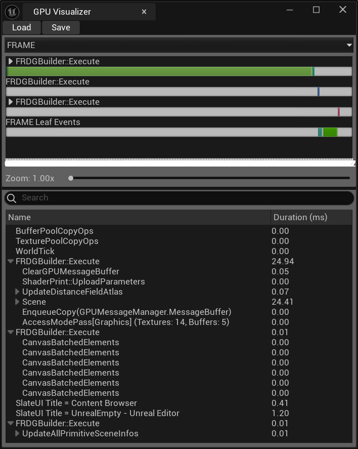
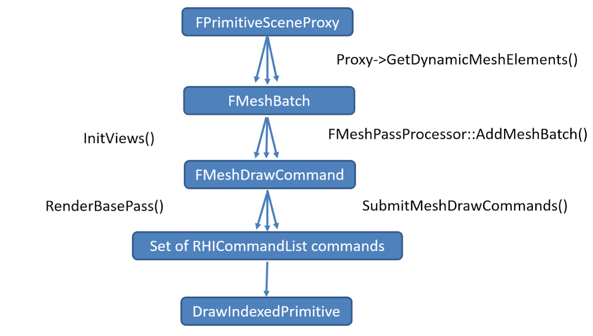
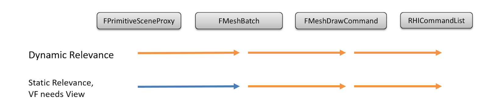
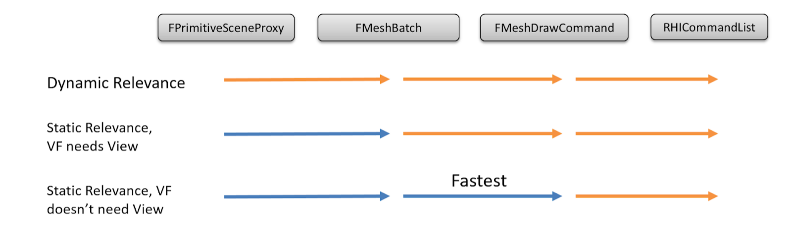
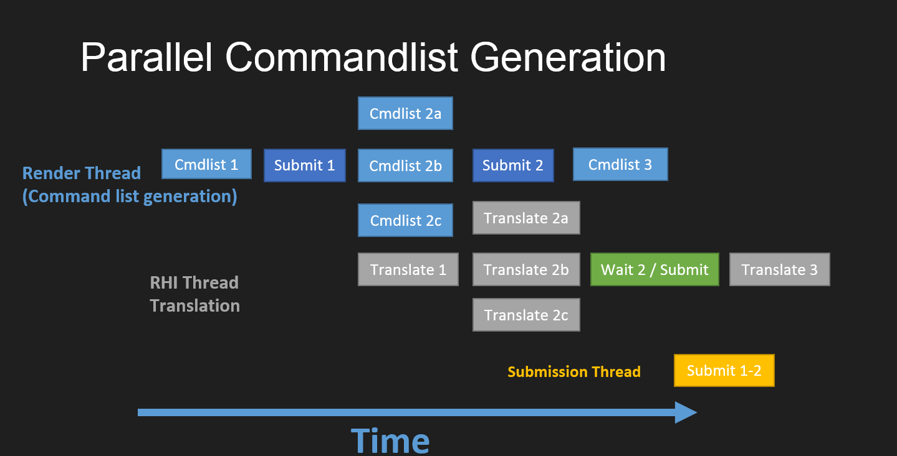

UnrealEngineGraphics
Table of Contents
- UnrealEngineGraphics
- Graphics Programming
- Graphics Programming Overview
- Mesh Drawing Pipeline
- Parallel Rendering Overview
- Threaded Rendering
- Render Dependency Graph
- Shader Development
- FShaderCache
- AsyncCompute
- Shaders in Plugins
- Overview of Shaders in Plugins
- Creating a New Global Shader as a Plugin
- Graphics Programming
- 参考资料
UnrealEngineGraphics note.
<!– more –>
UnrealEngineGraphics
Graphics Programming
这部分文档是为图像程序员准备的，他们需要处理渲染系统和编写着色器。
引擎中的渲染器模块会管理并渲染场景，而场景拥有和每个世界场景相关的可渲染信息。它包括所有定义的绘制规则和着色器。
RHI 模块是渲染 API 的接口，是图形编程的另一个关键组件。Graphics Programming Overview 介绍了一些关键的类、变量和设置，以下子页面介绍了特定的渲染主题。
Graphics Programming Overview
为与渲染系统一起工作的图形程序员和编写着色器的程序员提供的信息。
Mesh Drawing Pipeline
本指南介绍了如何添加自定义网格通道，以及 Unreal Engine 的网格绘制性能特性。
Parallel Rendering Overview
并行渲染的概述。
Threaded Rendering
为与线程渲染器一起工作的图形程序员提供的信息。
Render Dependency Graph
一种即时模式 API，它将渲染命令记录到图数据结构中以进行编译和执行。
Shader Development
为编写着色器的图形程序员提供的信息。
FShaderCache
提供了减少游戏中着色器卡顿的机制。
AsyncCompute
AsyncCompute 是一种硬件功能，它通过交错不同的 GPU 任务来提高效率。
Shaders in Plugins
有关在插件中创建和使用着色器的信息。
Overview of Shaders in Plugins
概述在插件中创建着色器。
Creating a New Global Shader as a Plugin
通过插件创建和设置新的全局着色器。
Graphics Programming Overview
Getting Started
在 Unreal Engine 中，有大量的渲染代码，所以很难快速了解整体的情况。一个好的起点是阅读 FDeferredShadingSceneRenderer::Render，这就是在渲染线程上渲染新帧的地方。使用 profilegpu 命令查看绘制事件(draw events)也是很有用的。然后，你可以在 Visual Studio 中通过绘制事件名称进行文件查找，找到相应的 C++实现。
查看" Shader Development "以获取有关着色器工作的信息。
查看" Coordinate Spaces "以了解 Unreal Engine 中使用的坐标空间术语的解释。
下面是和渲染相关的控制台命令（通常使用?作为参数会获得帮助，不带参数则显示当前状态）：
| Console Command | Description |
|---|---|
| stat unit | 显示整体帧时间以及游戏线程、渲染线程和 GPU 时间。最长的那个是瓶颈。然而，GPU 时间包含空闲时间，所以只有当它是最长且 stands alone 时才是瓶颈。 |
| Ctrl+Shift+. 或 recompileshaders changed | 重新编译自上次保存.usf 文件以来更改的着色器。这将在加载时自动发生。 |
| Ctrl+Shift+; 或 profilegpu | 测量正在被渲染的 view 的 GPU 时间。你可以在弹出的 UI 或引擎日志中查看结果。 |
| Vis 或 VisualizeTexture | 可视化各种渲染目标的内容，并可以保存为 bmp。 |
| show x | 切换(开启或关闭)指定的显示标志(flag 标记)。使用 show 获取显示标志列表及他们当前的状态列表。在编辑器中，使用视口 UI 代替。 |
| pause | 暂停游戏，但继续渲染。任何模拟渲染工作将停止。 |
| slomo x | 更改游戏速度。在分析时非常有用，可以减慢时间而不跳过模拟工作，例如 slomo .01。 |
| debugcreateplayer 1 | 用于测试分屏。 |
| r.CompositionGraphDebug | 执行以获取单帧 composition graph dump 数据。 |
| r.DumpShaderDebugInfo | 设置为 1 时，会导致任何随后编译的着色器都会将调试信息 dump 到 GameName/Saved/ShaderDebugInfo。 |
| r.RenderTargetPoolTest | 用特殊颜色清除由渲染目标池返回的纹理，以追踪颜色泄漏错误。 |
| r.SetRes | 设置当前游戏视图的显示分辨率。在编辑器中无效。 |
| r.ViewportTest | 允许测试不同的视口矩形配置（仅在游戏中），如使用 Matinee/Editor 时可能发生的。 |
show fog 开启关闭 fog
show specular 开启关闭高光
下面是和渲染相关的命令行参数：
| Commandline | Description |
|---|---|
| -d3ddebug | 启用 D3D11 调试层，有助于捕获 API 错误。 |
| -sm4 | 强制使用 SM4 功能级别的 D3D11 RHI。 |
| -opengl3 / -opengl4 | 强制使用指定功能级别的 OpenGL RHI。 |
| -dx11 | 目前是 Windows 上的默认值。 |
| -dx12 | 实验性。 |
| -featureleveles2 | 在运行编辑器时被忽略，需要在编辑器首选项中启用。 |
| -featureleveles31 | 在运行编辑器时被忽略，需要在编辑器首选项中启用。 |
| -ddc=noshared | 防止使用网络（共享）Derived Data Cache（派生数据缓存）。在调试着色器缓存问题时可能很有用。 |
Modules
渲染器代码存在于其自己的模块中，为了非单一构建（non-monolithic builds），该模块被编译为一个 独立的 dll。 这允许更快的迭代，因为当渲染代码更改时，我们不必重新链接整个应用程序。Renderer 模块依赖于 Engine，因为它有许多回调到 Engine。然而，当 Engine 需要调用 Renderer 中的某些代码时，是通过一个接口实现的，通常是 IRendererModule 或 FSceneInterface。
Scene representation
渲染器看到的场景由 primitive components 和存储在 FScene 中的各种其他结构列表定义。维护一个 primitives 的八叉树以加速空间查询。
Primary scene classes (主要场景类)
在 UE 中有一个渲染线程，它与游戏线程并行运行。大多数在渲染线程和游戏线程建立桥梁的类依据它的状态所有权属于哪个线程被分为两部分。
| Class | Description |
|---|---|
| UWorld | 包含了可以互相交互的 Actors 和 Components 集合。 关卡（Levels）可以被流化到 world 中，也可以被流化出 world。程序中可以激活多个 world |
| ULevel | Actors 和 Components 集合，它们被同时加载和卸载。并且存储在同一个地图文件中 |
| USceneComponent | 任何需要添加到 FScene 的对象的基类，例如 lights，meshes，fog 等等 |
| UPrimitiveComponent | 任何可以被渲染或可以和物理交互的对象的基类。也作为可视性剔除的粒度以及渲染属性的说明（例如，投射阴影等等）。和 UObjects 一样，游戏线程拥有的变量和状态，渲染线程不能直接访问 |
| ULightComponent | 表示一个光源。渲染器负责计算并将其贡献添加到场景中。 |
| FScene | 渲染器版本的 UWorld。只有将对象添加到 FScene 中，该对象对于渲染器来说才存在。将对象添加到 FScene 被称为注册组件。渲染线程拥有 FScene 的全部状态，游戏线程不能直接修改。 |
| FPrimitiveSceneProxy | 渲染器版本的 UPrimitiveComponent,为渲染线程镜像 UPrimitiveComponent 状态。存在于 Engine 模块并且被子类化来支持不同类型的 Primitives（skeletal，rigid，BSP 等等）。实现了很多比较重要的函数，例如 GetViewRelevance DrawDynamicElements 等等 |
| FPrimitiveSceneInfo | 内部的渲染状态（特定于对 FRendererModule 的实现），其对应一个 UPrimitiveComponent 和 FPrimitiveSceneProxy。存在于渲染模块，所以引擎模块看不到它 |
| FSceneView | 单个视图的引擎表示。可以使用不同的 view 通过不同的 FSceneRenderer::Render 调用来渲染一个场景(从而支持编辑器的多个视口)。也可以使用不同的 view 通过同一个 FSceneRenderer::Render 调用来渲染场景（从而支持游戏中的分屏）。每一帧都会创建一个新的 View |
| FViewInfo | 视图的内部渲染表示，存在于渲染模块 |
| FSceneViewState | ViewState 存储了一个 view 的私有的渲染信息，这些信息被不同的帧使用。在游戏中，每个 ULocalPlayer 都有一个 ViewState |
| FSceneRenderer | 每一帧都会创建的类，用于封装帧之间的临时变量 |
下表按照所属模块列出主要的类。这对解决链接问题很重要。
| Engine Module | Renderer Module |
|---|---|
| UWorld | FScene |
| UPrimitiveComponent/FPrimitiveSceneProxy | FPrimitiveSceneInfo |
| FSceneView | FViewInfo |
| ULocalPlayer | FSceneViewState |
| ULightComponent/FLightSceneProxy | FLightSceneInfo |
下表按照所属线程列出主要的类。在编写代码时始终注意哪个线程拥有状态，以避免 race condition 是很重要的。
| Game Thread | Rendering Thread |
|---|---|
| UWorld | FScene |
| UPrimitiveComponent | FPrimitiveSceneProxy/FPrimitiveSceneInfo |
| FSceneView/FViewInfo | |
| ULocalPlayer | FSceneViewState |
| ULightComponent | FLightSceneProxy/FLightSceneInfo |
Material classes
| Class | Description |
|---|---|
| FMaterial | 渲染使用的材质的接口。提供对材质属性（例如，混合模式）的访问。包含一个着色器地图，渲染器用于获取单个着色器 |
| FMaterialResource | UMaterial 对 FMaterial 接口的实现。 |
| FMaterialRenderProxy | 渲染线程上材质的表示。提供对 FMaterial 接口及每个标量、向量和纹理参数当前值的访问。 |
| UMaterialInterface | [抽象类] 材质功能的游戏线程接口。用于获取用于渲染的 FMaterialRenderProxy 和作为资源的 UMaterial |
| UMaterial | 材质资源。创作为一个节点图。计算材质属性用于渲染，设置混合模式等等 |
| UMaterialInstance | [抽象类] UMateiral 的实例。使用 UMaterial 中的节点图，但是提供不同的参数（标量，矢量，贴图，静态开关）。每个实例有一个父 UMaterialInterface。所以一个材质实例的父亲可以是一个 UMaterial 或另一个 UMaterialInstance。这将会创建一个链，最终指向一个 UMaterial |
| UMaterialInstanceConstant | 只能在编辑器中修改的 UMaterialInstance。可以提供 scalar vector texture 以及静态开关参数 |
| UMaterialInstanceDynamic | 可以在运行时修改的 UMaterialInstance。可以提供 scalar vector texture 参数。不能提供静态开关参数，并且不能是另一个 UMaterialInstance 的父亲 |
Primitive components and proxies
Primitive components 是可见性和相关性判定的基本单位。例如，遮挡和视锥体裁剪发生在每个 primitive 的基础上。因此，在设计系统时，考虑组件的大小很重要。每个组件都有一个用于各种操作的 bounds，如裁剪、投影阴影和光照影响确定。
组件只有被注册了以后，在场景中才可见。游戏线程修改了一个组件的属性后，必须在该组件上调用 MarkRenderStateDirty()，才能将改变传播到渲染线程。
FPrimitiveSceneProxy 和 FPrimitiveSceneInfo
FPrimitiveSceneProxy 是渲染线程版本的 UPrimitiveComponent。其用于依据不同类型的组件来子类化。它存在于 Engine 模块，并在渲染过程中被调用。FPrimitiveSceneInfo 是 Primitive component 状态,为渲染器模块私有。
Important FPrimitiveSceneProxy methods
| Function | Description |
|---|---|
| GetViewRelevance | 在帧的开始时，从 InitViews 中调用，返回一个填充后的 FPrimitiveViewRelevance |
| DrawDynamicElements | 在代理相关的任何 Pass 中调用该函数来绘制代理。只有在代理表明它具有动态相关性时才调用。 |
| DrawStaticElements | 在游戏线程中附加 primitive 时调用该函数以提交 StaticMesh 元素。只有在代理表明它具有静态相关性时才调用。 |
Scene rendering order
渲染器按其希望将数据组合到 render targets 的顺序处理场景。例如，Depth only pass 在 Base pass 之前渲染，以便填充 Hierarchical Z （HiZ）以减少 Base pass 的着色成本。这个顺序由 C++中调用的 pass 函数的顺序静态定义。
Relevance (相关性)
FPrimitiveViewRelevance 是关于哪些效果（即哪些 passes）与 primitive 相关的信息。一个 primitive 可能具有多个元素，这些元素有不同的相关性，因此 FPrimitiveViewRelevance 实际上是所有元素相关性的逻辑或。这意味着一个 primitive 可以同时具有不透明和半透明相关性，或动态和静态相关性；它们不是互斥的。
FPrimitiveViewRelevance 还指示 primitive 是否需要使用动态和/或静态 rendering path，其是通过 bStaticRelevance 和 bDynamicRelevance 来指定的。
Drawing Policies (绘制规则)
绘制规则包含使用 pass 特定的 shader 渲染网格的逻辑。它们使用 FVertexFactory 接口来抽象网格类型，并使用 FMaterial 接口来抽象材质细节。在最低级别，绘制规则获取一组网格材质 shader 和顶点工厂，将顶点工厂的缓冲区绑定到渲染硬件接口（RHI），将网格材质 shader 绑定到 RHI，设置适当的着色器参数，然后发出 RHI 绘制调用。
Drawing Policy methods
| Function | Description |
|---|---|
| Constructor | 从给定的顶点工厂和材质 shader 地图，查找合适的着色器，并存储这些引用 |
| CreateBoundShaderState | 为绘制规则创建 RHI 绑定着色器状态。 |
| Matches/Compare | 提供方法以在静态绘制列表中对绘制规则进行排序。Matches 必须比较 DrawShared 依赖的所有因素。 |
| DrawShared | 设置 RHI 状态，这些状态对于从 Matches 函数返回 true 的绘制规则是不变的。例如，大多数绘制规则按照材质和顶点工厂排序，所以只依赖于材质的着色器参数可以被设置，顶点工厂特有的顶点缓冲区可以被绑定。如果可以的话，应该尽量使用该函数代替 SetMeshRenderState 来设置状态，因为在静态渲染路径中，DrawShared 调用次数比较少。 |
| SetMeshRenderState | 设置 RHI 状态，这些状态 是 Mesh 特有的 或者任何没有在 DrawShared 中设置的状态。该函数比 DrawShared 调用次数多很多，所以性能比较敏感。 |
| DrawMesh | 真正地触发 RHI 的绘制调用 |
Rendering paths
Unreal Engine 有一个动态渲染路径，提供更多控制但遍历速度较慢。还有一个静态渲染路径，它会缓存场景遍历，以尽可能接近 RHI 级别的性能。区别主要在高层，因为它们在最低级别都使用绘制规则（drawing policies）。每个渲染 pass（绘制规则）需要确保在需要时可以处理这两种渲染路径。
Dynamic rendering path
动态渲染路径使用 TDynamicPrimitiveDrawer 并调用每个 primitive scene proxy 的 DrawDynamicElements 来进行渲染。需要使用动态路径渲染的 primitives 集合由 FViewInfo::VisibleDynamicPrimitives 跟踪。每个渲染 pass 需要迭代此数组，并在每个 primitive proxy 上调用 DrawDynamicElements。然后, DrawDynamicElements 会组装尽可能多的 FMeshElements，并使用 DrawRichMesh 或 TDynamicPrimitiveDrawer::DrawMesh 提交它们。这最终会创建一个新的临时绘制规则，调用 CreateBoundShaderState、DrawShared、SetMeshRenderState，最后是 DrawMesh。
动态渲染路径提供了很大的灵活性，因为每个代理在 DrawDynamicElements 中都有一个回调，可以在回调中执行特定于该组件类型的逻辑。它的插入成本最低，但遍历成本较高，因为没有状态排序，也没有任何缓存。
Static rendering path
静态渲染路径通过静态绘制列表实现。网格在附加到场景时被插入到绘制列表中。在此插入过程中，会调用代理上的 DrawStaticElements 以收集 FStaticMeshElements。然后创建一个绘制规则实例，并存储 CreateBoundShaderState 的结果。新的绘制规则根据其 Compare 和 Matches 函数进行排序，并插入到绘制列表中的适当位置（参见 TStaticMeshDrawList::AddMesh）。在 InitViews 中，初始化一个包含静态绘制列表可见性数据的位数组，并传递给 TStaticMeshDrawList::DrawVisible，在那里绘制列表实际被绘制。DrawShared 仅为所有匹配的绘制规则调用一次，而 SetMeshRenderState 和 DrawMesh 为每个 FStaticMeshElement 调用（参见 TStaticMeshDrawList::DrawElement）。
静态渲染路径将大量工作移到了附加时间，这显著加快了渲染时的场景遍历。对于静态网格，静态绘制列表渲染在渲染线程上快了大约 3 倍，这允许场景中有更多的静态网格。由于静态绘制列表在附加时缓存数据，它们只能缓存视图无关的状态。很少重新附加但经常被渲染的 primitives 是静态绘制列表的好候选者。
静态渲染路径可能会暴露错误，因为它每个状态桶只调用 DrawShared 一次。这些错误可能很难检测，因为它们依赖于渲染顺序和场景中网格的附加顺序。特殊视图模式，如仅照明、未照明等，将强制所有 primitives 使用动态路径，如果在强制动态渲染路径时 bug 消失，则其很可能是由于某绘制规则的 DrawShared 和/或 Matches 函数的错误实现而出现的。
High level Rendering order
以下是从 FDeferredShadingSceneRenderer::Render 开始渲染帧的控制流描述：
| Operation | Description |
|---|---|
| GSceneRenderTargets.Allocate | 如果需要，就重新分配全局场景 render target，使其适应当前视图 |
| InitViews | 通过各种剔除方法来初始化 primitive 可见性，设置这帧可见的动态阴影，按需对阴影视锥和场景进行求交（用于整个场景阴影或预阴影） |
| PrePass/Depth only pass | RenderPrePass/FDepthDrawingPolicy.只输出深度值到深度缓冲区中。这个 pass 可以在多个模式下起作用：disabled，occlusion only,complete depths, 取决于激活的特性需要什么。通常该 pass 的目的是初始化 Hierarchical Z 来减少 Base 阶段的着色消耗，尤其是昂贵的片段着色器 |
| Base pass | RenderBasePass/TBasePassDrawingPolicy.渲染不透明和遮罩材质，输出材质属性到 GBuffer。Lightmap 贡献和天空光也会在此处计算并放入场景颜色 |
| Issue Occlusion Queries/BeginOcclusionTests | 开始延迟的遮挡查询，这将会在下一帧中的 InitViews 中被使用。这是通过渲染被查询物体的 bounding boxes 来完成的，有时候将边界盒分组，合在一起来减少 draw call。 |
| Lighting | 混合使用 standard deferred 和 tiled deferred 着色，每个光照的阴影贴图被渲染，并且光照贡献会被累计到场景颜色中。Light 也累积到 translucency lighting volumes 中。 |
| Fog | 在 deferred pass 中，基于每像素方式，为不透明表面进行雾和大气散射计算。 |
| Translucency | 半透明会被累积到一个 offscreen render target，在该 pass 雾被应用于每个顶点，以便能融入场景。半透明的最终光照计算在一个单独 pass 中进行，以保证正确混合。 |
| Post Processing | 使用 GBuffers 应用各种后期处理效果。半透明被合成到场景中。 |
这是一个相当简单的 high level view。具体细节，可以查阅相关代码或者查看 profilegpu 的日志输出。
Tips: 在控制台输入 profilegpu 命令，执行完毕后会弹出如下窗口。

Render Hardware Interface(RHI)
渲染硬件接口（Render Hardware Interface, RHI）是位于平台特定图形 API 之上的一个薄层。在 Unreal Engine 中，RHI 的抽象层次尽可能保持在低层次，以便大多数功能可以用平台无关的代码编写，并在支持所需功能级别的所有平台上“正常工作”。
功能集被量化为 ERHIFeatureLevel，以保证低复杂性。如果一个平台无法支持某个功能级别所需的所有功能，则必须降低级别，直到能够支持为止。
功能级别描述：
- SM5：通常对应于 D3D11 着色器模型 5，但由于 OpenGL 4.3 的限制，只能使用 16 个纹理。支持细分曲面、计算着色器和立方图数组。支持延迟着色路径。
- SM4：对应于 D3D11 着色器模型 4，基本上与 SM5 相同，但不支持细分曲面、计算着色器或立方图数组。支持延迟着色路径。不支持眼睛适应，因为它使用计算着色器。
- ES3_1：对应于 OpenGL ES3.1、Vulkan 和 Metal 支持的功能。
| Feature Level | Description |
|---|---|
| SM5 | 通常对应于 D3D11 Shader Model 5, 但由于 OpenGL 4.3 的限制，只能使用 16 个纹理。支持细分曲面、计算着色器和 cubemap arrays。支持 deferred shading path 。 |
| SM4 | 对应于 D3D11 Shader Model 4,基本和 SM5 相同，但不支持细分着色器，计算着色器以及 cubemap arrays。支持 deferred shading path。不支持人眼适应，因为其使用了计算着色器。 |
| ES3_1 | 对应于 OpenGL ES3.1、Vulkan 和 Metal 支持的功能 |
Rendering state grouping
渲染状态根据它们影响的 pipeline 部分进行分组。例如，RHISetDepthState 设置所有与深度缓冲相关的状态。
Rendering state defaults
由于渲染状态众多，每次绘制时设置所有状态是不实际的。相反，Unreal Engine 有一个隐式状态集，这些状态假设已被设置为默认值（因此在更改后必须恢复到这些默认值），以及一组必须显式设置的较小状态集。没有隐式默认值的状态集包括：
- RHISetRenderTargets
- RHISetBoundShaderState
- RHISetDepthState
- RHISetBlendState
- RHISetRasterizerState
- 由 RHISetBoundShaderState 设置的着色器的任何依赖项
所有其他状态默认假定处于默认值（由相关的 TStaticState 定义，例如默认的 stencil 状态由 RHISetStencilState(TStaticStencilState<>::GetRHI())设置）。
Mesh Drawing Pipeline
本页面的信息面向希望添加 custom mesh passes 或希望了解 Unreal Engine 的网格绘制性能特征的程序员。
网格绘制管道（Mesh Drawing Pipeline）基于保留模式(retained mode)的概念，在这种模式下，所有场景绘制提前准备好，而不是在每一帧中构建。利用静态网格的特性来积极的缓存和合并绘制调用，这些特性很少变化并且可以在多帧中重用。
网格渲染从 FPrimitiveSceneProxy 开始，它是游戏线程中 UPrimitiveComponent 的渲染线程表示。FPrimitiveSceneProxy 负责通过 GetDynamicMeshElements 和 DrawStaticElements 的回调将 FMeshBatch 提交给渲染器。
FMeshBatch 将 FPrimitiveSceneProxy 的实现（用户代码）与网格 Pass（私有渲染模块）分离。它包含了 Pass 所需的一切，以确定最终的 shader 绑定和渲染状态，因此代理从不知道它将在什么 Pass 中被渲染。
下一步是将 FMeshBatch 转换为网格 Pass 特定的 FMeshDrawCommand。FMeshDrawCommand 是 FMeshBatch 和 RHI 之间的接口。它是一个完全无状态的绘制描述，存储了 RHI 需要了解的关于网格绘制的所有信息：
- 使用哪些着色器。
- 它们的资源绑定。
- 绘制调用参数。
这使得可以在 RHI 级别之上进行缓存和合并绘制调用。FMeshDrawCommand 由网格 Pass 特定的 FMeshPassProcessor 从 FMeshBatch 创建。
最后，SubmitMeshDrawCommands 用于将 FMeshDrawCommand 转换为一系列 RHI 命令，这些 RHI 命令被放置到 RHICommandList 中。

Cached and Dynamic Mesh Batches
FPrimitiveSceneProxy 有两种生成 FMeshBatch 的路径——缓存路径和动态路径。FPrimitiveSceneProxy 的实现中通过 GetViewRelevance()函数控制每帧使用哪种路径。
缓存路径构建并重用 FMeshBatch，适用于快速渲染那些不每帧更改的绘制，例如静态网格。缓存路径由 DrawStaticElements 实现，当代理被添加到场景时调用。创建的 FMeshBatch 存储在 FPrimitiveSceneInfo::StaticMeshes 中，并在每帧中重用，直到代理从场景中移除。
动态路径每帧重新创建 FMeshBatch。这是最灵活的路径，用于那些每帧经常变化的绘制，例如粒子。动态路径由 GetDynamicMeshElements 实现。该函数在每帧的 InitViews 中被调用，并为每个视图（view）创建一个临时的 FMeshBatch。

FMeshBatch 代码路径。橙色箭头表示每一帧都必须执行的操作，而蓝色箭头表示在被缓存之前执行一次的操作。
FMeshPassProcessor
特定的 mesh pass processor 派生自 FMeshPassProcessor 基类，负责将 FMeshBatch 转换为给定 Pass 的网格绘制命令。在此阶段进行最终的绘制过滤，还会选择合适的着色器并收集着色器绑定（shader bindings）。
要创建自定义 mesh pass processor，必须从 FMeshPassProcessor 派生，并重写 AddMeshBatch 函数。
AddMeshBatch 实现内容：
- 绘制过滤——例如，如果材质有透明绘制模式，则不要在 FDepthPassMeshProcessor 中处理它。
- 选择着色器和管线状态（深度/模版/混合状态）。
- 最后调用 BuildMeshDrawCommands()，它收集 Pass/材质/顶点工厂/primitive 的着色器绑定，并将新的绘制命令添加到适当的列表中。
Shader Bindings
在 Unreal Engine 中，着色器绑定可以是 Uniform Buffers、Samplers、Textures、ShaderResourceViews 或松散参数（FShaderParameter）。
FMeshPassProcessor 并不直接通过 RHICmdList.SetShaderParameter 将着色器绑定发送到 RHI，而是将它们记录到 FMeshDrawSingleShaderBindings 类中。
BuildMeshDrawCommands()函数是所有 pass 公用的代码，该函数将调用 pass 对应的 shaders 的 GetShaderBindings() 函数。
着色器绑定分为几类：
- 传递常量的 uniform buffers，如 ViewUniformBuffer 或 DepthPassUniformBuffer
- 顶点工厂绑定
- 材质绑定
- Primitive 绑定
- pass 特定的绑定，该绑定在绘制之间会变化
注意，为每个绘制设置不同的绑定会阻止绘制调用合并。此外，设置松散参数（不在 Uniform Buffer 中的着色器参数）会阻止绘制调用合并，导致在绘制之间进行缓慢的常量缓冲区更新。
由于每个 FMeshPassProcessor 必须通过 BuildMeshDrawCommands()来调用 pass 着色器的 GetShaderBindings()，我们需要一种机制来从 FMeshPassProcessor 传递任意数据到 GetShaderBindings()调用。这是通过 BuildMeshDrawCommands()的 ShaderElementData 参数实现的。
FMeshDrawCommand Performance Hazards
FMeshDrawCommand 性能隐患
FMeshDrawCommand 中使用了一些内联分配器(inline allocators)来存储可变长度数组，而无需额外的堆分配。溢出这些分配器会导致性能隐患，因为每个网格绘制命令必须构造/析构/复制堆分配，并在遍历命令时会发生缓存未命中。
FMeshDrawShaderBindings 假设有 2 个着色器频率（顶点+像素 Tips 这里的频率应该是指数量变化频率）：
TArray<FMeshDrawShaderBindingsLayout, TInlineAllocator<2>>ShaderLayouts
FMeshDrawCommand 假设在所有频率中有 10 个着色器绑定：
const int32 NumInlineShaderBindings = 10;
FMeshDrawCommand 假设顶点工厂中有 4 个顶点流(vertex streams)：
typedef TArray<FVertexInputStream, TInlineAllocator<4>>FVertexInputStreamArray;
Pass Types
有三种方式使用 FMeshPassProcessor 进行绘制：
- EMeshPass::Type 枚举：在这里添加一个条目会在 FScene 内部分配一个 FParallelMeshDrawCommandPass。这使得 FScene 能够在 AddToScene 时缓存 pass 的网格绘制命令。必须使用 FRegisterPassProcessorCreateFunction 将 FMeshPassProcessor 注册到它们的枚举。Pass 设置（setup）和分派（dispatch）在任务中进行。
- Manual Pass：使用 manual pass，其中 FParallelMeshDrawCommandPass 存储为任意类中的变量。当每帧有可变数量的 passes 时使用（例如，阴影深度 pass）。这种类型的 pass 不能在 FScene::AddToScene 时缓存命令，但仍然可以从任务中进行 pass 设置和分派得到好处。
- DrawDynamicMeshPass：用于即时模式绘制，是最慢但最方便的方法。pass 设置和分派立即在调用线程中发生。
注意，目前渲染器尚未支持插件扩展，除了 DrawDynamicMeshPass 之外，添加新 Pass 需要更改渲染器模块代码。
FParallelMeshDrawCommandPass
为了添加自定义网格 Pass，首先需要在 EMeshPass 枚举中添加一个新条目。接下来，在 FRelevancePacket::MarkRelevant()内部，根据相关性标记，将静态网格添加到可见网格绘制命令列表中。例如，以下代码片段将网格绘制命令添加到深度 Pass 中，如果它与深度 Pass 相关：
if (StaticMeshRelevance.bUseForDepthPass) { DrawCommandPacket.AddCommandsForMesh(PrimitiveIndex, PrimitiveSceneInfo, StaticMeshRelevance, StaticMesh, Scene, bCanCache, EMeshPass::DepthPass); }
在 ComputeDynamicMeshRelevance 中为动态绘制标记 EMeshPass 相关性：
if (ViewRelevance.bDrawRelevance && (ViewRelevance.bRenderInMainPass || ViewRelevance.bRenderCustomDepth)) { PassMask.Set(EMeshPass::DepthPass); View.NumVisibleDynamicMeshElements[EMeshPass::DepthPass] += NumElements; }
使用 FParallelMeshDrawCommandPass::DispatchDraw 绘制这个特定 Pass：
View.ParallelMeshDrawCommandPasses[EMeshPass::DepthPass].DispatchDraw(nullptr, RHICmdList);
还可以设置一个并行命令列表集，以便在并行中绘制此 Pass：
FPrePassParallelCommandListSet ParallelCommandListSet(View, this, ParentCmdList, true, DrawRenderState); View.ParallelMeshDrawCommandPasses[EMeshPass::DepthPass].DispatchDraw(&ParallelCommandListSet, ParentCmdList);
DrawDynamicMeshPass
FParallelMeshDrawCommandPass 是常见网格 pass 的默认路径。它应该用于性能关键的网格 pass，因为它是唯一支持网格绘制命令缓存和并行渲染的路径。另一方面，性能要求强制执行非常严格的设计——例如，在 InitViews 之后无法修改网格绘制命令或着色器绑定。
对于某些用例，如在编辑器中绘制少量网格，DrawDynamicMeshPass 可能是一个更简单的解决方案。它提供即时模式网格绘制，是最灵活的渲染路径。Unreal Engine 在某些仅限编辑器的 pass 和 Canvas 渲染中使用 DrawDynamicMeshPass。
使用 DrawDynamicMeshPass 进行绘制非常简单，只需传递一个 lambda，该 lambda 将填充一个临时的网格绘制命令列表：
DrawDynamicMeshPass(View, RHICmdList, [&View, CurrentDecalStage, RenderTargetMode](FDynamicPassMeshDrawListContext* DynamicMeshPassContext) { FMeshDecalMeshProcessor PassMeshProcessor( View.Family->Scene->GetRenderScene(), &View, CurrentDecalStage, RenderTargetMode, DynamicMeshPassContext); for (int32 MeshBatchIndex = 0; MeshBatchIndex < View.MeshDecalBatches.Num(); ++MeshBatchIndex) { const FMeshBatch* Mesh = View.MeshDecalBatches[MeshBatchIndex].Mesh; const FPrimitiveSceneProxy* PrimitiveSceneProxy = View.MeshDecalBatches[MeshBatchIndex].Proxy; const uint64 DefaultBatchElementMask = ~0ull; PassMeshProcessor.AddMeshBatch(*Mesh, DefaultBatchElementMask, PrimitiveSceneProxy); } });
Cached Mesh Draw Commands
缓存的网格体绘制命令是调用"FPrimitiveSceneInfo::AddToScene–>FPrimitiveSceneInfo::CacheMeshDrawCommands"时构建的。使用这些命令进行绘制非常高效，因为我们只需在每帧选择适当的预构建命令（FDrawCommandRelevancePacket::AddCommandsForMesh）。缓存的绘制命令只能在绘制状态每帧不更改时使用，并且所有着色器绑定都可以在 AddToScene 中设置。
为了支持缓存网格绘制命令：
- pass 必须使用 EMeshPass::Type 中的一个条目
- 注册自定义网格处理器时必须传递 EMeshPassFlags::CachedMeshCommands 标志
- 网格 pass 处理器需要能够设置所有着色器绑定，而不依赖于 FSceneView，因为在缓存过程中 FSceneView 为空
为了使着色器能够通过缓存网格绘制命令访问每帧数据，我们绑定场景范围的 uniform buffers（参见 FScene::UniformBuffers），然后使用 RHIUpdateUniformBuffer 在绘制之前更改其内容。
目前，只有 FLocalVertexFactory（UStaticMeshComponent）可以被缓存，因为所有其他顶点工厂都需要一个视图来设置它们的着色器绑定。

Mesh Draw Command caching paths。橙色箭头表示每一帧都必须执行的操作，而蓝色箭头表示仅执行一次并进行缓存的操作。UE 存在 3 种网格绘制路径（橙色为每帧动态生成，蓝色为只生成一次后缓存）：
第 1 种是动态绘制路径，从 FPrimitiveSceneProxy 到 RHICommandList 每帧都会动态创建，效率最低，但可控性最强；
第 2 种是需要 View 的静态路径，可以缓存 FMeshBatch 数据，效率中，可控性中；
第 3 种是不需要 view 的静态绘制路径，可以缓存 FMeshBatch 和 FMeshDrawCommand，效率最高，但可控性差，需满足的条件多。
Cache Invalidation
任何 Mesh Pass Processor 在 AddMeshBatch 中读取的数据都是缓存网格绘制命令的依赖项。当该依赖项发生变化时，缓存的命令必须失效。可以使用 FPrimitiveSceneInfo::BeginDeferredUpdateStaticMeshes 使单个 primitive 的缓存命令失效。可以通过将 Scene->bScenesPrimitivesNeedStaticMeshElementUpdate 设置为 true 来使整个场景的缓存命令失效。这是一个重量级操作，在游戏过程中应避免，因为它会导致较大的场景出现卡顿。
例如，FBasePassMeshProcessor::AddMeshBatch 使用 Scene->SkyLight 来决定是否选择 SkyLight 着色器排列(即 shader 变体)。当 Scene-SkyLight 更改时，我们必须使缓存网格绘制命令失效。
为了通过这种缓存方案实现良好的性能，重要的是将数据放入持久的 Uniform Buffers 中。然后，你需要更新这些缓冲区，而不是频繁地使缓存命令失效。例如，SkyLight 的情况可以更改为基于 PassUniformBuffer 内容在着色器中使用动态分支，而不是选择不同的着色器排列(即 shader 变体)。
Resource Lifetime Management
FMeshDrawCommand 不负责维护其引用的任何资源的生命周期，因此在处理缓存的网格绘制命令时需要特别小心，应该将引用某个特定资源(资源已经被释放)的命令失效。例如，当重新创建由缓存网格绘制命令引用的 Uniform Buffer 时，在遍历缓存的网格绘制命令以进行渲染时会导致崩溃。此时应更新 Uniform Buffer，或者必须使缓存的网格绘制命令失效。
可以使用 VALIDATE_UNIFORM_BUFFER_LIFETIME 来跟踪已删除但仍由缓存网格绘制命令引用的 Uniform Buffer。
Draw Call Merging
由于 FMeshDrawCommands 在 RHI 级别之上捕获了绘制所需的所有状态，我们可以轻松地比较它们以进行绘制调用合并。目前实现的唯一形式的绘制调用合并是基于 D3D11 功能集的，这允许将具有相同着色器绑定的绘制调用合并为实例化绘制。更高级的 RHI（如 D3D12）可以实现更激进的绘制合并，但尚未实现。
Dynamic Instancing
要将两个绘制合并为一个实例化的绘制，它们必须具有相同的着色器绑定（FMeshDrawCommand::MatchesForDynamicInstancing）。在着色器中，只有 InstanceID 会在它们之间有所不同，或者 vertex streams 以 instance 频率进行设置。
着色器参数必须经过精心设计以实现动态实例化。根据参数变化频率，通过各种方法实现动态实例化：
- pass 参数：这些放置在 pass uniform buffer 中，pass 中的任何绘制都可以合并。
- FLocalVertexFactory 参数：这些放置在 UStaticMesh 拥有的 uniform buffer 中，任何使用相同 UStaticMesh 的绘制都可以合并。
- 材质实例参数：这些放置在材质 uniform buffer 中，任何使用相同材质实例的绘制都可以合并。
- 光照贴图资源参数：这些放置在 LightmapResourceCluster uniform buffer 中，任何使用相同 LightmapTexture 的绘制都可以合并。
- primitive 参数：这些放置在场景范围的 primitive 数据缓冲区中，称为 GPUScene，并在着色器中使用 PrimitiveID 进行索引。
GPU Scene
为了在同一个实例绘制（该实例绘制包含 primitive 特定的参数）中可以有不同的 primitives，它们被上传到场景范围的缓冲区（UpdateGPUScene），并使用 PrimitiveId 进行索引。对于 FLocalVertexFactory，PrimitiveId 来自于一个实例频率的 vertex input stream。必须将其传递给像素着色器，并使用 GetPrimitiveData(Parameters.PrimitiveId).Member 来访问 primitive 着色器参数，而不是直接访问 primitive uniform buffer（Primitive.Member）。
Instancing Efficiency
目前，只有缓存的网格绘制命令可以通过动态实例化合并，这将动态实例化限制为 FLocalVertexFactory。
某些边缘情况也会阻止合并：
- Lightmaps 的小纹理——调整 DefaultEngine.ini 中的 MaxLightmapRadius
- Per-component vertex colors
- SpeedTree Wind node
要在关卡中调查动态实例化效率，可以使用控制台命令 r.MeshDrawCommands.LogDynamicInstancingStats 1，并在日志中检查输出。
注意，Depth Prepass 和 Shadow Depth passes 通常实现了更高的合并效率，因为它们会尽可能使用默认材质的着色器进行覆盖。
Mesh Drawing Parallelism
网格绘制的大部分工作是在任务中进行的，以避免占用渲染线程的关键路径。在 Rendering Thread 帧的开始，InitViews 中，FParallelMeshDrawCommandPass 为每个 Pass 发布一个任务以进行 Pass 设置（动态命令生成、排序和绘制调用合并）。随着渲染线程在帧中推进并到达网格 Pass（例如，RenderBasePass），根据系统的内核数量和需要分派的绘制数量，它为每个 Pass 启动多个 FDrawVisibleMeshCommandsAnyThreadTasks 以进行绘制分派（记录 RHICmdList）。
- 将 r.MeshDrawCommands.ParallelPassSetup 设置为 0 将禁用 Pass 设置任务，并导致工作在渲染线程上进行，这对于调试很有用。
- 将 r.RHICmdBasePassDeferredContexts 设置为 0 将禁用 base pass 绘制分派的并行任务，导致这些任务在渲染线程上进行。
这些任务尽可能早地启动，并设置依赖链，以便它们可以与渲染线程并行执行一帧。渲染线程仅在帧结束时在这些任务完成时，在 FSceneRenderer::WaitForTasksClearSnapshotsAndDeleteSceneRenderer 中阻塞。
Console Variables
以下是一些有助于诊断网格绘制管道中问题的有用控制台变量：
- r.MeshDrawCommands.ParallelPassSetup：切换网格绘制命令处理任务，这对于诊断网格 pass 线程问题很有用。
- r.MeshDrawCommands.UseCachedCommands：禁用时强制所有网格绘制命令为动态，这对于诊断缓存网格绘制命令中的陈旧数据问题很有用。
- r.MeshDrawCommands.DynamicInstancing：切换动态实例化，对诊断动态实例化问题很有用。
- r.MeshDrawCommands.LogDynamicInstancingStats：对检查动态实例化效率很有用。
- r.GPUScene.UploadEveryFrame：强制 GPU 场景每帧完全更新，这对于诊断陈旧 GPU 场景数据的问题很有用。
- r.GPUScene.ValidatePrimitiveBuffer：将 GPU 场景下载到 CPU，并验证其内容与 primitive uniform buffer 一致。
Parallel Rendering Overview

上图展示了在虚幻引擎中并行命令列表生成的工作原理。
Threading Overview
最初，渲染器运行在渲染线程（Render Thread）中，游戏线程（Game Thread）通过将命令添加到队列中，这些命令在一帧中稍后执行。这些命令会调用渲染硬件接口（RHI）层，RHI 层是我们实现的跨平台图形 API 接口。
为了提高这一过程的效率并利用不同平台的能力，渲染线程现在作为前端，将平台无关的图形命令添加到渲染器的命令列表。然后，一个新的线程，即 RHI 线程，通过后端的适当图形 API 翻译（执行）这些命令。这种分离使得在不同的平台上能够实现不同的后端并行化，例如游戏主机、DX12 和 Vulkan。通常，前端并行生成的任何内容都会在后端并行翻译。
Tips: 某些命令不使用命令列表系统执行，例如锁定和解锁操作。这些命令由渲染线程直接发出。在这些情况下，引擎要么 flush RHI 线程并等待操作完成，要么复制数据并将其队列化。这根据操作和平台的不同而有所不同。
Graphical Commands and the Command List
渲染线程添加到队列的命令是从 FRHICommand 模板派生的结构体的实例。它们重写 Execute 函数（该函数在翻译过程中被调用），并存储所需的任何数据。命令可以根据平台的最佳性能启发式在不同平台上以不同方式提交给 GPU（例如，每帧提交多次，或在帧末一次性提交），或者可以通过发出 FRHISubmitCommandsHint 命令来提交。
翻译中使用的主要接口是 IRHICommandContext。每个平台和 API 都有一个派生的 RHICommandContext。在翻译过程中，RHICommandList 被赋予一个 RHICommandContext 来操作，每个命令的 Execute 函数会调用 RHICommandContext API。命令的上下文负责状态遮蔽、验证和处理执行给定操作所需的任何 API 特定细节。
Synchronization
渲染器在游戏线程、渲染线程、RHI 线程以及 GPU 之间的同步是一个复杂的话题。在最高层面，Unreal Engine 通常配置为“延迟一帧”的渲染器。这意味着渲染线程在处理帧 N 时，游戏线程处理帧 N+1，除非渲染线程运行速度比游戏线程快。RHI 线程的加入使得这一情况稍微复杂，因为渲染线程能够在 RHI 线程处理帧 N 的同时完成帧 N+1 的可见性计算。最终结果是，当游戏线程处理帧 N+1 时，渲染线程可能正在处理帧 N 或帧 N+1 的命令，RHI 线程也可能在翻译帧 N 或帧 N+1 的命令，这取决于执行时间。这些保证由 FFrameEndSync 和 FRHICommandListImmediate 函数调用 RHIThreadFence 调节。无论并行化如何配置，都要保证提交给 GPU 的命令顺序与在单线程渲染器中的提交顺序保持不变。这是为了确保一致性，在更改渲染代码时必须维护。
Debugging
有几个控制台变量可以用来控制并行行为。由于许多阶段是正交的，它们可以独立禁用以进行测试，并且可以在时间允许的情况下分阶段引入新平台。
- r.rhicmdusedeferredcontexts：如果设置为 0，将禁用后端并行化。默认值为 1。
- r.rhicmduseparallelalgorithms：如果设置为 0，将禁用前端并行化。默认值为 1。
- r.rhithread.enable：如果设置为 0，将完全禁用 RHI 线程。命令列表仍会生成，但将在某些点直接在渲染线程上翻译。
- r.rhicmdbypass：如果设置为 1，将完全禁用命令列表生成，使渲染器像最初那样运行，直接在渲染线程上调用 RHI 命令而不使用命令列表。注意，除非 RHI 线程被禁用，否则这一设置将被忽略。
Threaded Rendering
Rendering thread
在 Unreal Engine 中，整个渲染器在其自身的线程中运行，该线程通常比游戏线程滞后一到两帧。
在处理渲染相关内容时，必须仔细考虑每次内存读写，以确保不仅线程安全，还要行为上的确定性。当功能行为依赖于两个线程之间的执行速度差异时，这被称为竞争条件(race condition)。避免竞争条件非常重要，因为它们通常很难重现，可能会因速度差异而依赖于机器、平台、调试器或配置。这类错误很难调试，修复这类 bug 所需时间可能是普通可重现错误的 10 倍。
以下是竞争条件/线程错误的简单示例：
/** Actor 在组件注册到场景时，在游戏线程上调用FStaticMeshSceneProxy */ FStaticMeshSceneProxy::FStaticMeshSceneProxy(UStaticMeshComponent* InComponent): FPrimitiveSceneProxy(...), Owner(InComponent->GetOwner()) <======== 注意：缓存了 AActor 指针 ... /** 在渲染器遍历场景时在渲染线程上调用DrawDynamicElements */ void FStaticMeshSceneProxy::DrawDynamicElements(...) { if (Owner->AnyProperty) <========== 竞争条件！游戏线程拥有所有 AActor/UObject 状态， // 这里可能在任何时候对Owner进行写入。而Owner甚至可能已被垃圾回收了，此时会导致崩溃 // 通过在此代理中镜像 AnyProperty 的值可以安全地完成此操作 }
Development approach
无法通过详尽测试找到竞争条件。重要的是要意识到，不能通过猜测和检查或事后修复错误来创建可靠的线程代码。最佳方法是完全理解游戏线程和渲染线程之间的交互，并使用机制确保确定性。你应该能够解释使每次交互确定的事件顺序，否则几乎可以肯定你在创造竞争条件。
Thread specific data structures
因此，最好将数据放在不同线程“拥有”的单独结构中，以便明确谁可以修改什么。这对函数也适用。最好始终从同一线程调用每个函数，否则事情会变得非常复杂。Unreal Engine 的大部分结构都是这样的，例如，UPrimitiveComponent 是任何可以渲染、投射阴影、具有自身可见性状态等的基础游戏线程类。渲染线程永远不能直接接触 UPrimitiveComponent 的内存，因为游戏线程可能随时写入其成员。渲染线程有自己的类来表示此功能，即 FPrimitiveSceneProxy。游戏线程在创建并注册 FPrimitiveSceneProxy 后，不能再接触其内存成员。通过创建 FPrimitiveSceneProxy, UActorComponent::RegisterComponent 将组件添加到场景中并使其对渲染器可见。一旦组件被注册，并且可见，则在每个需要的 pass 中都会调用 FPrimitiveSceneProxy::DrawDynamicElements。
Performance considerations
游戏线程在每次 Tick()结束时阻塞，直到渲染线程赶上滞后一帧或两帧。由于渲染线程滞后较多，在游戏过程中不允许阻塞游戏线程以等待渲染线程完全赶上。在加载关卡或单个对象的 GC 期间阻塞也是一个坏主意，因为 Unreal Engine 支持异步流式加载关卡。有各种异步机制来避免阻塞。
Inter-thread communication
Asynchronous
两个线程之间的主要通信方法是通过 ENQUEUE_UNIQUE_RENDER_COMMAND_XXXPARAMETER 宏。该宏创建一个 local class, 类中包含一个 Execute 虚函数，其中包含了你输入的代码。游戏线程将命令插入渲染命令队列，渲染线程在适当的时候调用 Execute 函数。
FRenderCommandFence 为在游戏线程上跟踪渲染线程的进度提供了一种方便的方法。游戏线程调用 FRenderCommandFence::BeginFence 来开始栅栏。然后，游戏线程可以调用 FRenderCommandFence::Wait 来阻塞，直到渲染线程处理完栅栏，或者通过检查 GetNumPendingFences 来轮询渲染线程的进度。当 GetNumPendingFences 返回 0 时，渲染线程已处理完栅栏。
Blocking
FlushRenderingCommands 是阻塞游戏线程直到渲染线程赶上的标准方法。这对于离线操作（编辑器）非常有用，离线操作会修改渲染线程访问的内存。
Rendering resources
FRenderResource 提供了基本的渲染资源接口并提供初始化和释放的钩子。任何从 FRenderResource 派生的类（如 FVertexBuffer、FIndexBuffer 等）在用于渲染之前需要初始化，并在删除之前释放。只能从渲染线程调用 FRenderResource::InitResource，在游戏线程上可以调用一个辅助函数（BeginInitResource），将一个渲染命令加入队列，从而来调用 FRenderResource::InitResource。RHI 函数只能从渲染线程调用（除了创建设备、视口等少数情况）。
UObjects and Garbage Collection
垃圾回收（GC）在游戏线程上进行并作用于 UObjects。游戏线程可能会删除一个 UObject，而此时渲染线程正在处理一个命令，该命令引用了被删除的 UObject。因此，渲染线程永远不应该对一个 UObject 指针取消引用，除非有机制确保在渲染线程不再引用它之前 UObject 不会被删除。一个例子是 UPrimitiveComponent，在渲染线程处理分离命令之前，它使用一个名为 DetachFence 的 FRenderCommandFence 来防止 GC 删除 UObject。
Game thread FRenderResource handling
在游戏线程与渲染线程资源交互中，有两种常见场景需要考虑：静态资源（如索引缓冲区，通常只在加载或编辑器中修改）和动态资源（需要在每帧更新以反映游戏线程模拟的最新结果）。
Static resources
以下是 Unreal Engine 中处理静态资源交互的方式，以 USkeletalMesh 为例：
- 在加载时调用 USkeletalMesh::PostLoad，这会调用 InitResources。这会在它拥有的任何静态 FRenderResources（如索引缓冲区）上调用 BeginInitResource。BeginInitResource 将一个渲染命令加入队列以调用 FRenderResource::InitResource。从这一点开始，游戏线程不能再修改索引缓冲区内存，除非采取措施重新获得所有权。
- 一个组件注册并开始使用 USkeletalMesh 的索引缓冲区进行渲染。
- 垃圾回收（GC）确定在某个时刻不再引用该组件（例如，关卡卸载或不再引用）并解除组件。注意，此时游戏线程不能删除索引缓冲区内存，因为渲染线程可能尚未处理解除操作，可能仍在使用索引缓冲区进行渲染。
- GC 调用 USkeletalMesh::BeginDestroy，这是游戏线程对象将命令加入队列以释放渲染资源的机会，它会执行 BeginReleaseResource(&IndexBuffer);。游戏线程仍不能删除 IndexBuffer 的内存，因为渲染线程不一定已经处理完释放操作。我们可以让游戏线程阻塞直到渲染线程赶上，但这会导致卡顿和降帧，因此我们使用一个异步机制。为了跟踪渲染线程处理释放命令的进度，我们启动一个栅栏。
- GC 调用 USkeletalMesh::IsReadyForFinishDestroy，并且只有该函数返回 true 时，才会销毁 UObject。该函数仅在栅栏被渲染线程通过后返回 true，这意味着现在可以安全地从游戏线程删除索引缓冲区内存。
- 最后，GC 调用 UObject::FinishDestroy，该函数可以在一个中心位置释放内存(release memory in a central location)。在索引缓冲区的情况下，USkeletalMesh 的析构函数调用 FRawStaticIndexBuffer 的析构函数时，索引缓冲区内存被释放。FRawStaticIndexBuffer 的析构函数会调用持有索引缓冲区内存的 TArray 的析构函数，从而释放内存。
这种机制运作良好，因为它有效率（从不阻塞任何线程，而且在中心位置初始化(initializes in a central location)，而不是每帧检查是否需要初始化），并且是确定性的。
Dynamic resources
skeletal mesh bone 的 transforms 是由游戏线程的动画每帧生成的，其就是动态资源更新的一个很好的例子。目标是将每次动画更新后的 transforms 从游戏线程传输到渲染线程的数组中，在那里它们可以被设置为着色器常量。如果要每帧更新索引或顶点缓冲区，情况也是如此。以下是操作顺序：
- USkinnedMeshComponent::CreateRenderState_Concurrent 分配 USkinnedMeshComponent::MeshObject。从这一点起，游戏线程只能写入 MeshObject 指针，而不能写入 FSkeletalMeshObject 的内存。
- USkinnedMeshComponent::UpdateTransform 至少每帧调用一次以更新组件的运动。在 GPU 蒙皮时，这会调用 FSkeletalMeshObjectGPUSkin::Update。此时，我们在游戏线程上有最新的变换，需要将它们传输到渲染线程。这是通过首先在堆上分配内存（FDynamicSkelMeshObjectData），然后将骨骼变换复制到其中，然后使用 ENQUEUE_UNIQUE_RENDER_COMMAND_TWOPARAMETER 将此副本交给渲染线程。渲染线程现在拥有该副本，并负责删除它。ENQUEUE_UNIQUE_RENDER_COMMAND_TWOPARAMETER 宏包含将变换复制到其最终目的地的代码，以便可以将其设置为着色器常量。如果要更新顶点位置，对应的就是锁定并更新顶点缓冲区。
- 某个时刻，组件被解除。游戏线程将渲染命令加入队列以释放所有动态 FRenderResources，并且现在可以将 MeshObject 指针设置为 NULL，但实际内存仍被渲染线程引用，不能删除。这时延迟删除机制起作用。派生自 FDeferredCleanupInterface 的类可以以线程安全的异步方式删除。FSkeletalMeshObject 实现了此接口。游戏线程调用 BeginCleanup(MeshObject)，启动 FSkeletalMeshObject 的延迟删除。内存在安全时最终会被删除，并且清理完成。
Updating state vs Traversing the scene for rendering
在开发具有独立更新和渲染操作的系统时，将两者结合在 DrawDynamicElements 中是很诱人的，但这不是一个好的设计选择。更好的解决方案是将更新与渲染遍历分开，例如从游戏线程 Tick 中将更新命令加入队列。
DrawDynamicElements 由高级渲染代码调用，以绘制一个 primitive 组件的元素。高级代码假定没有 RHI 状态被改变，并且根据 shading passes、视图数量和场景捕获的需要，每帧可以多次调用 DrawDynamicElements。DrawDynamicElements 甚至可能被调用，但随后由于各种原因，底层绘制策略丢弃结果（例如，在深度 pass 期间提交的透明 FMeshElement 将被丢弃）。如果 primitive 组件实际上不可见，遮挡系统可能会根据其使用的启发式方法决定是否调用 DrawDynamicElements。所有这些因素都可能与应该每帧更新一次的状态更新发生冲突。
更好的解决方案是将更新与渲染遍历分开。游戏线程 Tick 可以将一个渲染命令加入队列来执行更新操作。如果这种用法可接受，通过使用 primitive 场景信息的 LastRenderTime，渲染命令可以选择基于可见性跳过更新。如果更新操作以这种方式单独加入队列，就可以使用任何 RHI 函数，包括设置不同的渲染目标（render targets）。
状态缓存（与更新相对）是此规则的一个例外。作为一种优化，状态缓存是将渲染遍历的中间结果缓存。它与遍历紧密相关，并且不改变 RHI 状态，因此不会遭受前述缺点（只要正确决定何时缓存）。
Render Dependency Graph
Shader Development
FShaderCache
AsyncCompute
Shaders in Plugins
Overview of Shaders in Plugins
Creating a New Global Shader as a Plugin
参考资料
- UE source code https://github.com/EpicGames/UnrealEngine
- https://dev.epicgames.com/documentation/en-us/unreal-engine/designing-visuals-rendering-and-graphics-with-unreal-engine
- https://dev.epicgames.com/documentation/en-us/unreal-engine/graphics-programming-for-unreal-engine
- https://www.cnblogs.com/timlly/tag/Unreal%20Engine/
- 剖析虚幻渲染体系 https://www.cnblogs.com/timlly/p/13512787.html